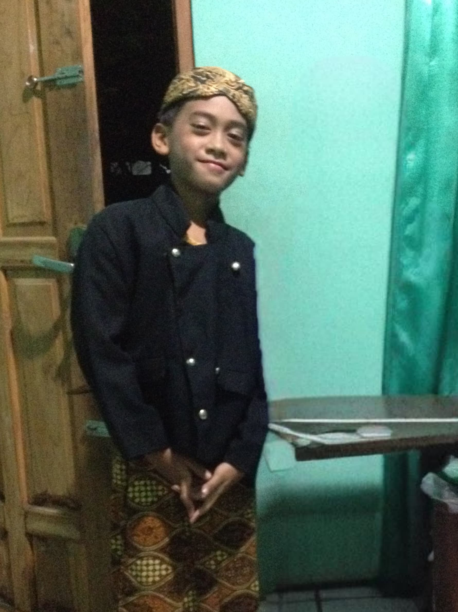
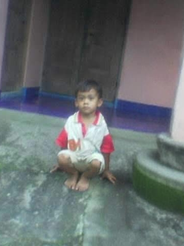
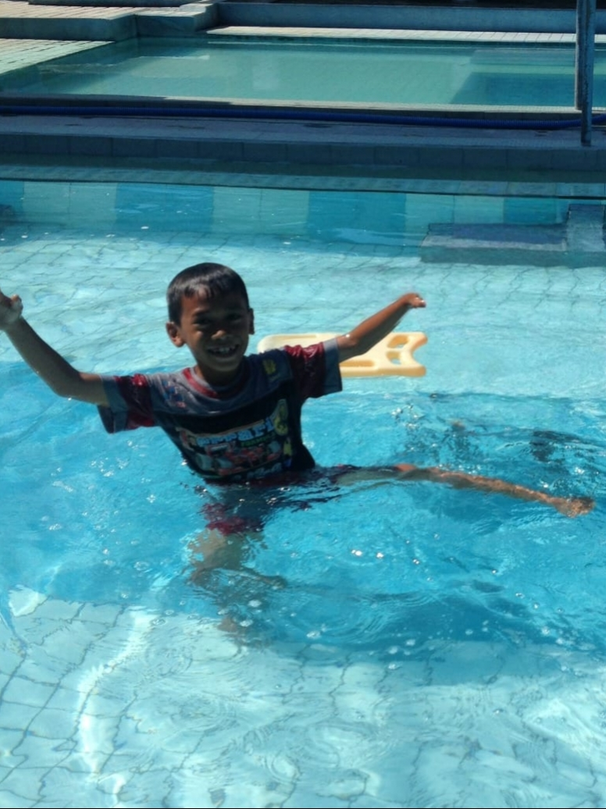
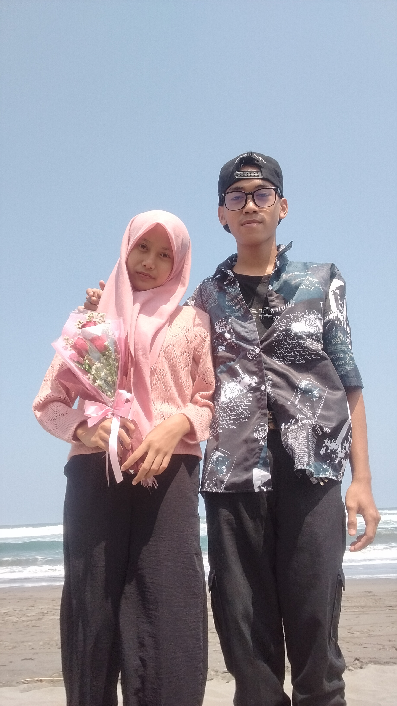
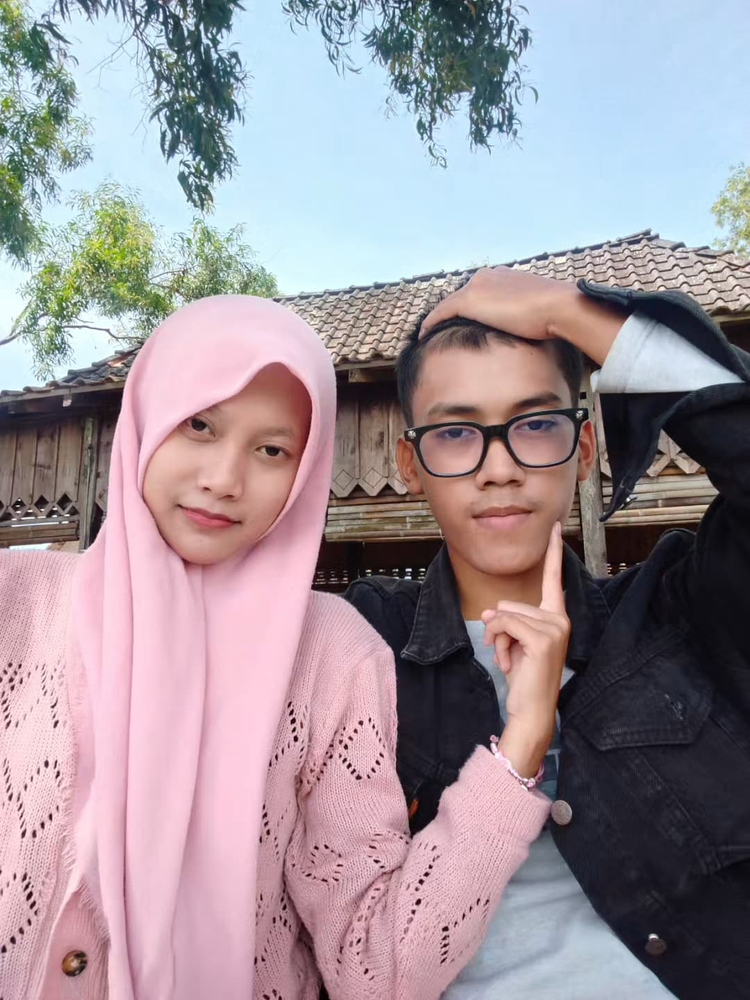

15 Maret 2026
Tap anywhere to start
your story…
Sebelum mulai pastikan volume HP kamu nyala
Sayangggkuuu🌹
tahun yang luar biasa



"Selamat ulang tahun ke-19 tahun, Sayanggg…
Makasih udah tumbuh jadi kamu yg sekarang.
Aku bangga sama kamu, lebih dari yang bisa aku bilang."
— Mari kembali ke masa lalu —
— Hari yang mengubah segalanya —
"Hari dimana semuanya berubah…"

5 September 2025 — pergi ke pantai, mainan air, tawa yang ga ada habisnya. Itu pertama kali aku sadar… kamu beda. Dan aku mau ini terus berlanjut.
— Kenangan kita —
Semakin hari,
semakin dekat 🤍


— yang selalu aku notice —
Hal kecil tentang kamu
yang mungkin kamu sendiri ga sadar,
tapi aku selalu perhatiin.
Kalau lagi mikir, mukamu keliatan banget. Aku selalu bisa nebak kapan kamu lagi serius — dan setiap kali lihat ekspresi itu, aku senyum sendiri.
hal #1Kalau lagi salting, kamu malah buang muka. Padahal justru itu yang bikin kamu makin lucu — dan makin susah buat aku berhenti suka sama kamu.
hal #2Style kamu tuh keren-keren. Aku ga pernah bilang langsung, tapi tiap kamu muncul dengan outfit baru, dalam hati aku selalu mikir — dia emang beda.
hal #3Rambutnya njegrak. Selalu. Dan entah kenapa justru itu salah satu hal pertama yang bikin aku notice kamu — dan sampai sekarang masih bikin aku sayang.
hal #4
"Aku ga jago ngomong langsung…
tapi aku mau kamu denger ini,
dari aku sendiri."
Dari Ana, dengan sepenuh hati 🤍

"This is not the end…
This is just the beginning
of our forever story."
Ana & Raihan · 2025 → ∞
🌸 🤍 🌹
— Behind The Story —
Ini semua cuma buat kamu
"Behind this story… there was someone
who made all of this just for you."
Happy Birthday,
Raihan Sayangku 🌹
— Ana, 15 Maret 2026 —